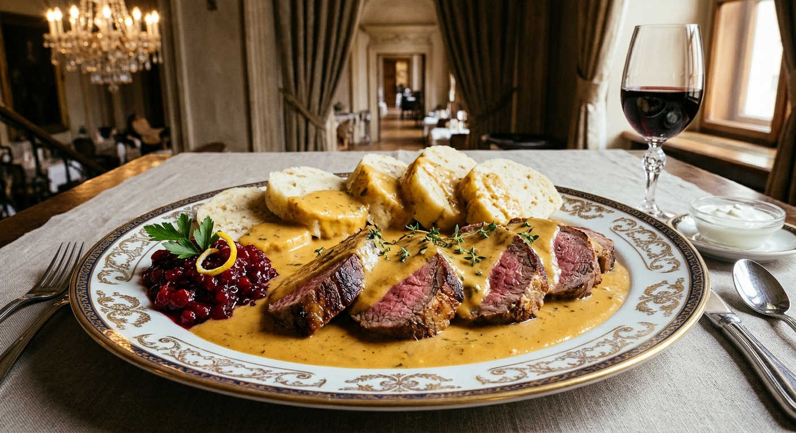
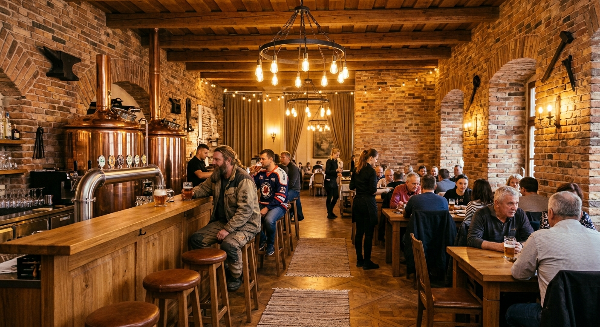
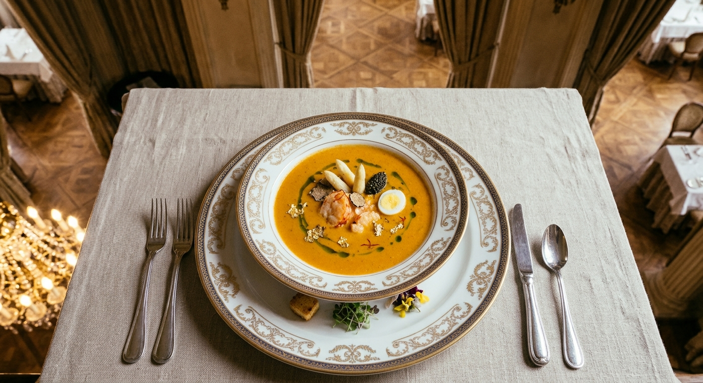

Moderní česká kuchyně v srdci Ostravy

Bistro Kovárna najdete v prostorách bývalé ostravské kovárny. Zachovali jsme cihlové zdi, masivní trámy i velké ohniště, na kterém připravujeme většinu jídel. Díky tomu mají naše pokrmy výraznou kouřovou chuť, kterou jinde nenajdete.

Cihly, dřevo a teplé světlo. U nás posedíte v útulném prostředí s duší Ostravy, ať už přijdete na oběd, večeři nebo jen na pivo z místního minipivovaru.

Spolupracujeme s farmáři z Moravskoslezského kraje. Maso, zelenina i sýry jsou čerstvé a od lidí, které osobně známe. Menu se mění podle sezóny.
Po–Pá: 11:00 – 22:00 | So: 12:00 – 23:00 | Ne: 12:00 – 20:00
Adresu a mapu najdete na stránce Kontakt.